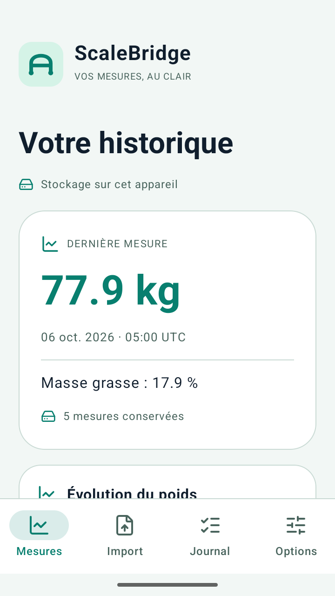
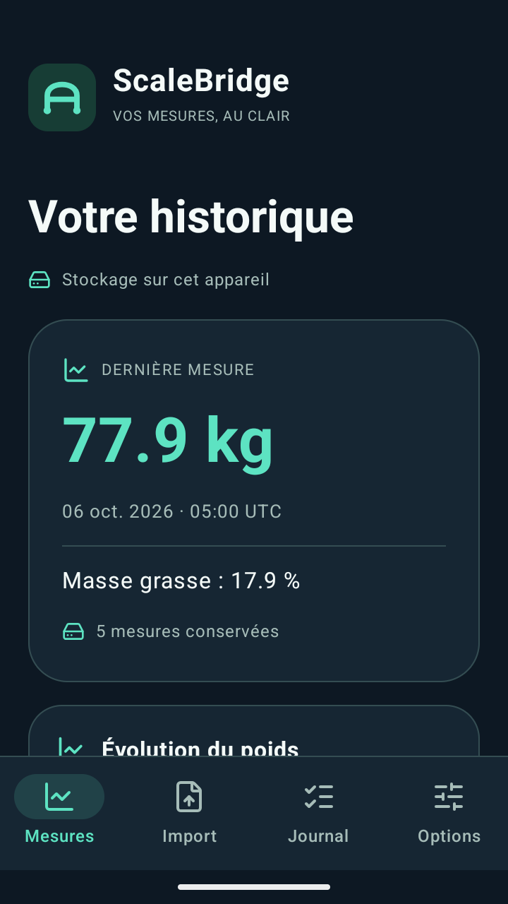

Local par choix
Aucune permission réseau. Vos mesures restent dans le stockage privé de l’app.
Votre balance exporte un CSV ? Remettez ses données en ordre : unités cohérentes, dates explicites et doublons retirés. Le traitement se fait sur votre appareil.
Voir la démo CSVCandidat local 0.1.0. Non publié sur Google Play. Aucun achat disponible.
77.9 kg
Dernière mesure · 6 octobre 2026
Stockées sur votre appareil
Aucune permission réseau. Vos mesures restent dans le stockage privé de l’app.
L’aperçu distingue ajouts, doublons et conflits avant tout enregistrement.
CSV ou JSON, à l’emplacement choisi. Les fichiers exportés vous appartiennent.
Mesures, journal et préférences. Les fichiers conservés ailleurs restent en place.
Comprendre le traitement de vos données · Contacter le support
Date, poids, masse grasse facultative. kg ou lb. Choisissez le fuseau des dates locales.
Voyez les nouvelles mesures, les doublons, les conflits et les lignes invalides. Rien n’est écrasé en silence.
Un historique sobre, un export CSV/JSON, une suppression complète des données de l’app.
Traitement local des fichiers CSV UTF-8, sans connexion directe à une balance ou une plateforme. Aucun connecteur fournisseur vérifié. Les fichiers exportés hors de l’application restent sous votre contrôle. Aucun conseil médical.
Prix non fixé. La valeur d’un achat unique sera étudiée après des essais avec de vrais utilisateurs. Aucun abonnement nécessaire au noyau local.


Données fictives. Captures de recette locale ; aucun résultat utilisateur réel.